What’s the most popular programming language?
How many databases are out there? (1 trillion sqlite DB)
How old is the oldest DB? (~3500 BC, 5k years old)
DB’s fun:
You might also have sqlite already installed on your
computer.
If running in terminal, remember to add semicolon ; at
the end of each query.
First, CREATE TABLE t (x int, y int)
Add data by
INSERT INTO t VALUES (1, 5), (2, 4), (3, 3), (4, 2), (5, 1)
Check with SELECT * FROM t (* = all the
columns)
To remove rows, DELETE FROM t WHERE x = 1 AND y = 5 (how
do you delete all rows?)
To remove table, DROP TABLE t
What do the following queries return given input?
| x | y |
|---|---|
| 1 | 5 |
| 2 | 4 |
| 3 | 3 |
| 4 | 2 |
| 5 | 1 |
SELECT x
FROM t
WHERE x < 3SELECT x, y
FROM t
WHERE y < 3SELECT x
FROM t
WHERE y < 3SELECT x+1
FROM t
WHERE y < 3SELECT x+y
FROM t
WHERE y < 3SELECT x+y
FROM t
WHERE NOT y < 3SELECT x+y
FROM t
WHERE y < 3 AND x > 1SELECT x+y
FROM t
WHERE y < 3 OR x > 1General form:
SELECT e(x, y)
FROM table
WHERE cond(x, y)Meaning:
for (x, y) in table:
if cond(x, y):
print(e(x, y))SELECT SUM(x) FROM tSELECT MIN(x) FROM tSELECT MAX(x) FROM tSELECT AVG(x) FROM tSELECT COUNT(x) FROM tAggregate by groups:
| x | y |
|---|---|
| 1 | 5 |
| 2 | 4 |
| 3 | 3 |
| 1 | 2 |
| 2 | 1 |
SELECT ...
FROM t
GROUP BY x| x | y |
|---|---|
| ? | ? |
| ? | ? |
| x | y |
|---|---|
| ? | ? |
| ? | ? |
| x | y |
|---|---|
| ? | ? |
SELECT x, SUM(y)
FROM t
GROUP BY xGROUP BY variable (x) must
be SELECTed, AGG function applied per
group.
Multiple group-by & aggregate variables
| x | y | z | w |
|---|---|---|---|
| 1 | 1 | 1 | 5 |
| 1 | 1 | 2 | 4 |
| 1 | 2 | 3 | 3 |
| 2 | 3 | 1 | 2 |
| 2 | 3 | 2 | 1 |
SELECT x, y, MIN(z), MAX(w)
FROM t
GROUP BY x, yCurrent general form:
4: SELECT x, AGG(y)
1: FROM t
2: WHERE cond(x, y)
3: GROUP BY xFROM?| Name | Notation | Meaning |
|---|---|---|
| selection | \(\sigma_p(t)\) | filter by condition \(p\) |
| projection | \(\pi_{e(x, y)}(t)\) | map an expression \(e\) over \(x, y\) |
| aggregation | \(\gamma_{x, F(y)}(t)\) | group by \(x\), aggregate over \(y\) using \(F\) |
Can you write out SQL query for each operation?
Meet my pets:
| name | toy |
|---|---|
| kira | 🛍️ |
| kira | 🍼 |
| casa | 🍼 |
| casa | 🧻 |
| name | food |
|---|---|
| kira | 🐟 |
| kira | 🍗 |
| casa | 🥬 |
| casa | 🍗 |
What do these queries return?
SELECT t.name
FROM t, f
WHERE t.name = f.name
AND t.toy = '🛍️'
AND f.food = '🐟'SELECT t.name
FROM t, f
WHERE t.name = f.name
AND t.toy = '🛍️'
AND f.food = '🍗'SELECT t.name
FROM t, f
WHERE t.name = f.name
AND t.toy = '🍼'
AND f.food = '🍗'SELECT t.name
FROM t, f
WHERE t.name = f.name
AND t.toy = '🛍️'
AND f.food = '🥬'General form for joining tables:
SELECT ...
FROM r, s
WHERE condMeaning:
for x1, x2, ... in r:
for y1, y2, ... in s:
if cond(x1, x2, ..., y1, y2, ...):
return ...Try all possible pairings of a row from r and a row from
s. I.e., first compute the Cartesian product of
r and s (how many rows does the following
query return?):
SELECT *
FROM t, ffor t_row in t:
for f_row in f:
return t_row ++ f_rowThen evaluate rest of query using result.
In relational algebra: \(\sigma_p(t \times f)\), or \(t \bowtie_p f\) (the join).
Current general form:
4. SELECT R.x, AVG(T.z)
1. FROM R, S, T
2. WHERE R.x = S.x AND S.y = T.y
3. GROUP BY R.x
sqlite> SELECT * FROM pets;
┌──────┬───────────────┬─────┬─────────┬──────┬────────┐
│ name │ breed │ age │ origin │ kind │ person │
├──────┼───────────────┼─────┼─────────┼──────┼────────┤
│ casa │ tabby │ 8 │ seattle │ cat │ remy │
│ kira │ tuxedo │ 6 │ hawaii │ cat │ remy │
│ toby │ border collie │ 17 │ seattle │ dog │ remy │
│ maya │ husky │ 10 │ LA │ dog │ sam │
└──────┴───────────────┴─────┴─────────┴──────┴────────┘How to find people with both a cat and a dog?
Attempt 1:
SELECT pets.person FROM pets
WHERE pets.kind="cat" AND pets.kind="dog";Attempt 2:
SELECT pets.person FROM pets
WHERE pets.kind="cat" OR pets.kind="dog";Take a step back: how do we find cat people?
SELECT pets.person FROM pets
WHERE pets.kind="cat";How do we find dog people?
SELECT pets.person FROM pets
WHERE pets.kind="dog";Guess what this does?
SELECT pets.person FROM pets
WHERE pets.kind="cat"
INTERSECT
SELECT pets.person FROM pets
WHERE pets.kind="dog";How about this:
SELECT pets.person FROM pets
WHERE pets.kind="cat"
UNION
SELECT pets.person FROM pets
WHERE pets.kind="dog";| SQL | Python |
|---|---|
WITH |
Local variable |
CREATE TABLE |
Global variable |
CREATE VIEW |
Helper function |
CREATE MATERIALIZED VIEW |
Cached helper function |
CREATE TABLE/(MATERIALIZED) VIEW cat_people AS
SELECT pets.person FROM pets
WHERE pets.kind="cat";
CREATE TABLE/(MATERIALIZED) VIEW dog_people AS
SELECT pets.person FROM pets
WHERE pets.kind="dog";
-- What happens if we run the following query twice?
-- What happens if we insert into `pets` then run the following query?
-- INSERT INTO pets VALUES ("casa", "tabby", 8, "seattle", "cat", "remy");
SELECT cat_people.person FROM cat_people
INTERSECT
SELECT dog_people.person FROM dog_people;WITH has a slightly different syntax as it’s local to
the query:
WITH cat_people AS (
SELECT pets.person FROM pets
WHERE pets.kind="cat"
), dog_people AS (
SELECT pets.person FROM pets
WHERE pets.kind="dog"
)
SELECT cat_people.person FROM cat_people
INTERSECT
SELECT dog_people.person FROM dog_people;How do we find pet kind with average age > 10? (Hint: find the average age for each kind first, then filter)
Does this work?
SELECT kind, AVG(age) FROM pets
WHERE AVG(age) > 10
GROUP BY kind;Average age per kind:
SELECT kind, AVG(age)
FROM pets
GROUP BY kind;Two queries:
CREATE TABLE averages AS
SELECT kind, AVG(age) AS a
FROM pets
GROUP BY kind;
-- Now we just filter for over 10:
SELECT * FROM averages
WHERE averages.a > 10.0;“One” query:
WITH averages AS (SELECT kind, AVG(age) AS a FROM pets GROUP BY kind)
SELECT * FROM averages WHERE averages.a > 10.0;ONE query:
SELECT kind, AVG(age) FROM pets
GROUP BY kind
HAVING AVG(age) > 10 -- condition on each groupNOTHING is more
confusing than SQLWhat does the following query return?
SELECT *
FROM R
WHERE R.x = R.x;How about this?
SELECT *
FROM R
WHERE R.x = R.x
OR R.x <> R.x;And this?
SELECT *
FROM R
WHERE null = null;In fact, none of these return anything:
SELECT *
FROM R
WHERE null <> null;
SELECT *
FROM R
WHERE NOT null <> null;NULL transcends truth.
Two kinds of values in SQL:
NULLTRUE,
FALSE, UNKNOWNMaking things worse, some DB uses NULL for
UNKNOWN. To protect our sanity, we treat them as
different.
There are 3 kinds of operators in SQL:
Data operators:
1 + 2
<data value> <data operator> <data value>The entire expression evaluates to itself another data value.
Predicates:
1 < 2
<data value> <predicate operator> <data value>The entire expression evaluates to a logical value.
Logical connectives:
true AND false
<logical value> <logical operator> <logical value>The entire expression evaluates to itself another logical value.
Conveniently summarized:
| Operator kind | Example | Input -> Output |
|---|---|---|
| Data | + - * / | data -> data |
| Predicate | > < = | data -> logic |
| Logical | AND OR NOT | logic -> logic |
Note that you can’t go from logic -> data.
NULLThese operators all behave as you would expect if NULL
is not involved. When NULL is involved,
there are special rules:
| Operator Kind | Example | Output when NULL is >= 1 of the operands |
|---|---|---|
| Data | + - * / | NULL |
| Predicate | > < = | UNKNOWN |
| Logical | AND OR NOT | 3 Valued Logic |
For data, it’s intuitive: if either operand is
NULL (it’s “missing” or “unknown”), the result should also
be “missing” or “unknown”, so the expression evaluates to
NULL as well.
For predicate, it’s also intuitive: the same reason
as for data, but because we’re dealing with logical types, we have the
logical equivalent of NULL, UNKNOWN.
There is one exception for predicates: To explicitly check if
xisNULL, you use:x IS NULL, which will return T/F on whetherxis indeedNULL. It won’t returnNULLdespite the RHS beingNULL.
For logical, we apply 3 valued logic:
| AND | true | false | UNKNOWN |
|---|---|---|---|
| true | true | false | UNKNOWN |
| false | false | false | false |
| UNKNOWN | UNKNOWN | false | UNKNOWN |
| OR | true | false | UNKNOWN |
|---|---|---|---|
| true | true | true | true |
| false | true | false | UNKNOWN |
| UNKNOWN | true | UNKNOWN | UNKNOWN |
| NOT | true | false | UNKNOWN |
|---|---|---|---|
| false | true | UNKNOWN |
Don’t memorize these! Deduce by short-circuiting rules.
When in doubt, use the
NULL rules from earlier and 3
valued logic to determine what the WHERE clause is
actually saying and how it would affect the queries.
SELECT *
FROM R
WHERE R.x=R.x; -- NULL=NULL => UNKNOWNWhere R.x is NULL, the WHERE
clause evaluates to UNKNOWN, so that row is
excluded. The return table is not necessarily the same
as R.
SELECT *
FROM R
WHERE R.x = R.x
OR R.x <> R.x; -- NULL <> NULL => UNKNOWNSame as above.
SELECT *
FROM R
WHERE null = null; -- NULL=NULL => UNKNOWNSame as above. It’s just explicit this time.
SELECT *
FROM R
WHERE null <> null; -- NULL <> NULL => UNKNOWNSame as above. It’s just explicit this time.
SELECT *
FROM R
-- NULL <> NULL => UNKNOWN
-- NOT UNKNOWN => still UNKNOWN
WHERE NOT null <> null;This time we have a nested operation. Just follow through with the
rules and you’ll find when WHERE evaluates to
UNKNOWN.
NOTHING out of
somethingOuter join: pad non-matching rows with NULL -
LEFT OUTER JOIN: keep all rows in left table -
RIGHT OUTER JOIN: keep all rows in right table -
FULL OUTER JOIN: keep all rows in both tables
Aggregates ignore NULL values
What do these return on R = {NULL, 1}?
SELECT COUNT(x) FROM R;
SELECT SUM(x) FROM R;
SELECT AVG(x) FROM R;
SELECT MIN(x) FROM R;But, what if R = {NULL}?
Challenge: how many offices per person?
Attempt 1:
SELECT p.name, COUNT(e.addr)
FROM p JOIN e
ON p.job = e.name
GROUP BY p.name;People with no offices are left out!
Use outer join to include them:
SELECT p.name, COUNT(e.addr)
FROM p LEFT OUTER JOIN e
ON p.job = e.name
GROUP BY p.name;Challenge: find the oldest cat, using ORDER BY,
DESC, and LIMIT.
SELECT *
FROM pets
WHERE kind="cat"
ORDER BY age DESC
LIMIT 1;Use a subquery:
SELECT pets.name, pets.age
FROM pets
WHERE pets.kind="cat"
AND pets.age=(
SELECT MAX(age)
FROM pets
WHERE kind="cat"
);Refactor with WITH:
WITH oldest AS (
SELECT MAX(age) AS a
FROM pets
WHERE kind="cat"
)
SELECT name, age
FROM pets, oldest
WHERE kind="cat" AND age=oldest.a;Oldest pet per kind:
SELECT pets.name, pets.age
FROM pets AS p1
WHERE pets.age=(
SELECT MAX(age)
FROM pets AS p2
WHERE p1.kind=p2.kind
);Oldest per kind without nesting:
WITH max_per_kind AS (
SELECT p2.kind, MAX(p2.age) AS max_age
FROM pets AS p2
GROUP BY p2.kind
)
SELECT p1.name, p1.kind, p1.age
FROM pets AS p1, max_per_kind AS m
WHERE p1.kind = m.kind AND p1.age = m.max_age;Hard challenge: do this with one single “flat” query (i.e., without
WITH or subqueries).
Up until now we’ve mostly just been SELECTing directly
from the result of our subquery. We can use other predicates on them
though:
EXISTS (SELECT ...) checks if it (the inner
SELECT expression) is not empty. That is, at least one row
is returned.NOT EXISTS (SELECT ...) checks if it is empty. No rows
are returned.X IN (SELECT Y FROM ...) checks that the returned rows
include X.X NOT IN (SELECT ...) checks that the returned rows do
not include X.X > ALL(SELECT ...) checks if X is > than
all values in output.X > ANY(SELECT ...) checks if X is > than at
least one value in output.Implement INTERSECT using EXISTS or
IN:
SELECT x FROM R
WHERE x IN (SELECT x FROM S);
SELECT x FROM R
WHERE EXISTS (SELECT * FROM S WHERE S.x = R.x);Find oldest pet per kind using NOT EXISTS or
ALL:
SELECT name, kind, age
FROM pets AS p1
WHERE NOT EXISTS (
SELECT *
FROM pets AS p2 WHERE p1.kind = p2.kind AND p1.age < p2.age
);
SELECT name, kind, age
FROM pets AS p1
WHERE age >= ALL (
SELECT age
FROM pets AS p2 WHERE p1.kind = p2.kind
);